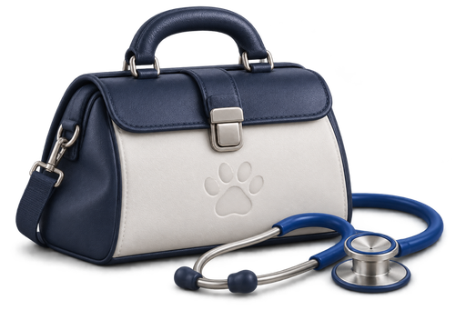
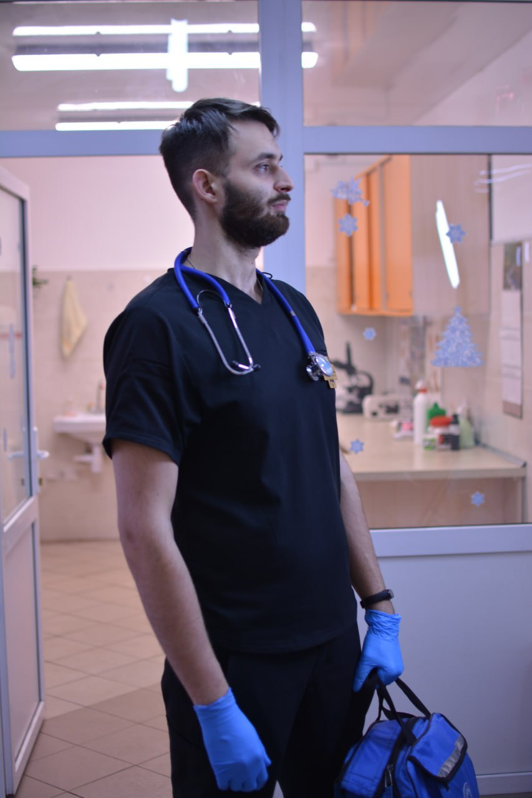
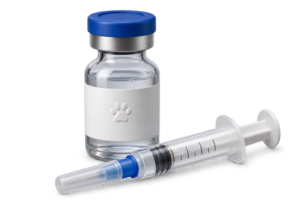
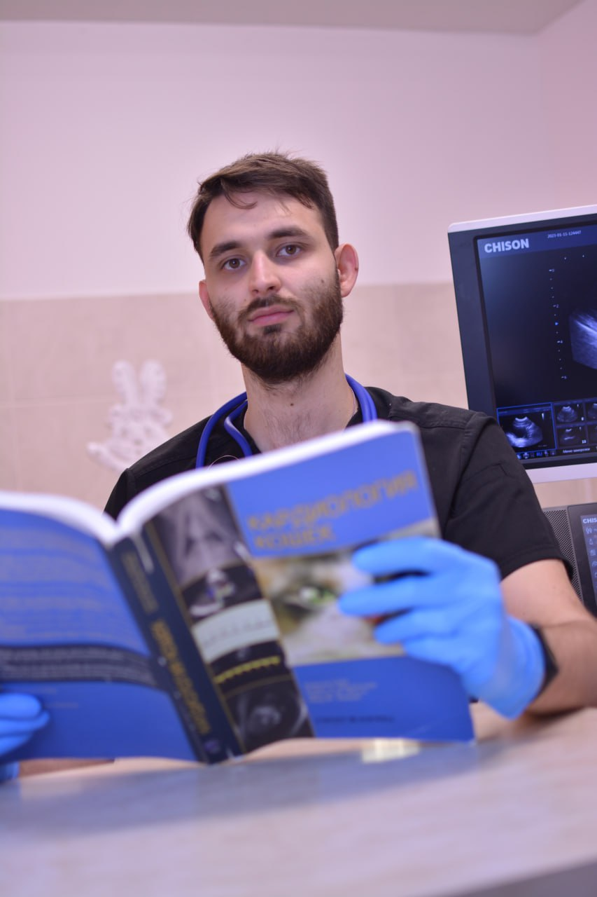
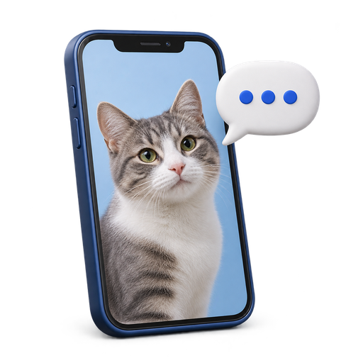
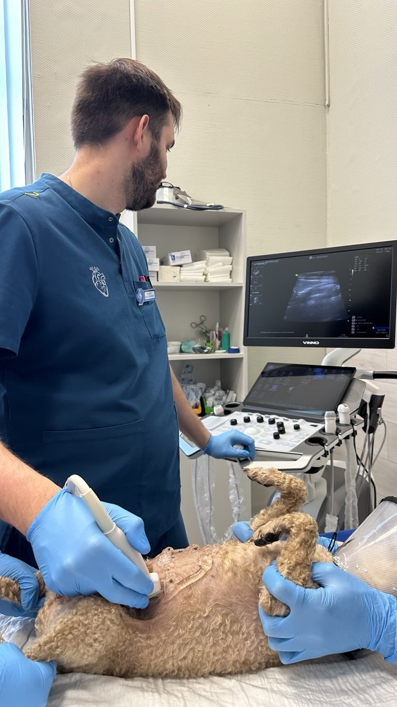
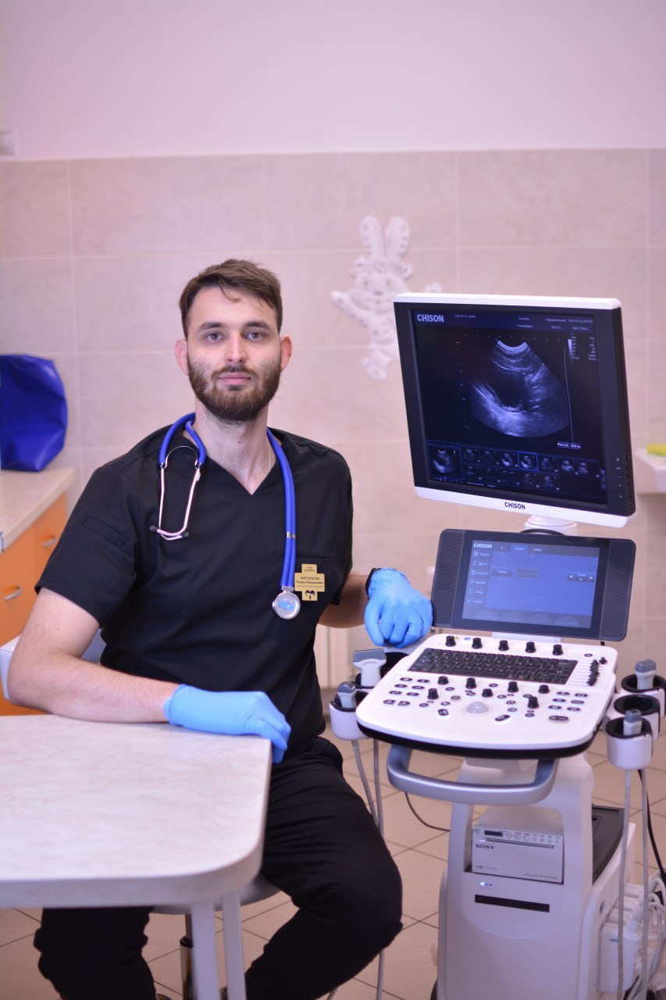
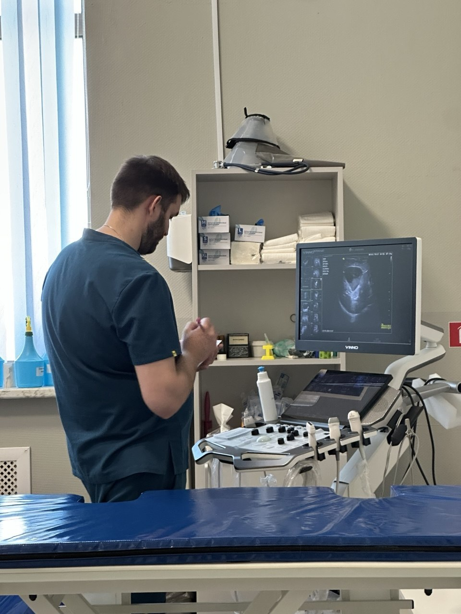

Осмотр и консультация
Осмотр питомца на дому, обсуждение его состояния и дальнейших действий.
Роман Чертопалов. Выезды по Полоцку, Новополоцку и окрестностям. Онлайн-консультации, когда нужно обсудить состояние питомца с ветеринаром.

Помощь кошкам и собакам
Осмотр, профилактика и назначенные процедуры — в привычной для питомца обстановке.

Осмотр питомца на дому, обсуждение его состояния и дальнейших действий.

Профилактические прививки кошкам и собакам. Условия проведения уточняются заранее.
Забор биоматериала на дому. Перечень исследований и подготовку согласуем перед выездом.
Назначенные ветеринаром процедуры и уход. Возможность выполнения дома обсуждается отдельно.
Нужную помощь и условия выезда согласуем перед записью.

Ветеринарный врач
Помогу понять, какая помощь нужна питомцу, и объясню, что делать дальше. Приезжаю на дом и консультирую онлайн — с вниманием к животному и вашим вопросам.
Исполнял обязанности главного врача.
Направления работы: кардиология, нефроурология и функциональная диагностика (УЗИ).
Спокойно и бережно — с вниманием к характеру и самочувствию питомца.
Обоснованные назначения и понятные объяснения: что делаем и зачем это нужно.

Связаться с ветеринаром дистанционно
Расскажите, что беспокоит питомца, и покажите имеющиеся назначения или результаты обследований. Обсудим следующие шаги и необходимость очного приёма.
С заботой о питомце



От обращения до визита
Начнём с разговора о питомце. Это поможет понять, какая помощь нужна и можно ли провести приём дома.
Связаться с врачомПолоцк, Новополоцк, Полоцкий район и ближайшие населённые пункты. Более дальние адреса, возможность визита и стоимость дороги согласуем заранее.
Назовите город и адрес, возраст животного и причину обращения.
Уточним возможность помощи на дому, время визита и предполагаемую стоимость.
Осмотрит питомца, проведёт согласованные процедуры и объяснит дальнейшие действия.
Условия выезда
Стоимость зависит от адреса и необходимой помощи. Перед записью обсудим состав услуг и возможные дополнительные расходы.
Перед записью
Коротко о выездном приёме, подготовке питомца и расчёте стоимости.
Роман Чертопалов. Выезд на дом или онлайн-консультация.